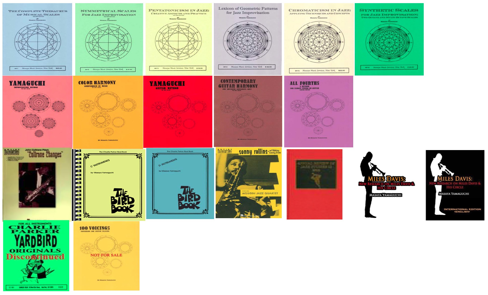

I have answered all incoming questions since 2000 (until recently), but I do not have time to do so anymore. If you wanted to send me the postive feedback on my books, please do so on Amazon.com. You don't need to fill out the text part, just leave 5 stars.
In most cases, the answers can be found in the book. Or read the other titles. I have published many books by the music students' demand.
For the permission of quotations from my books, please email me masayamusic (@) hotmail.com <Note: remove ( ) when you type my email address> Please wait for the reply for 2-3 weeks.
Before asking me for lessons, please check out my books!!!
|
Works by Yamaguchi
NOTE: The English paperback version is available exclusively from Jamey Aebersold's jazzbooks.com. Amazon USA has switched to selling KINDLE e-books only.
ALSO
AVAILABLE FROM
Miles Davis: New Research on Miles Davis & His
Circle <USA edition>
(Foreword by Dave Liebman)
Miles Davis: New Research on Miles Davis & His Circle <International
Edition>
To buy digital books from Google Play (Google Books) Click HERE, Amazon Kindle Click HERE

|
Selected Periodicals:
> John Coltrane and Carlos Salzedo: A Surprising Connection, The American Harp Journal, Vol.23, No.2, Winter 2011, p.59.
> Note Groups of Limited Transposition: A Key to Unlocking Multitonic Change Possibilities," Down Beat 67, No.9 (September 2000), p.70.
> A Creative Approach to Multi-Tonic Changes: Beyond Coltrane's Harmonic Formula, Annual Review of Jazz Studies 12, 2002
< Click here to BUY
英語版の紙の書籍は、Jamey Aebersold の jazzbooks.com のみで購入可能です。Amazon USAは電子書籍のみの販売に切り替えました。
２０００年以降、メールでの質問には全て回答してきましたが、現在はほぼ対応できません。ほとんどの場合、回答は本の中にあります。または、他のタイトルを読んで下さい。これまで教えた方々の要望により、多くの本を出版してきました。
私の本からの引用許可については、masayamusic (@) hotmail.com までメールでお問い合わせ
下さい＜注：メルアドの（）は取り除いてください＞。返信には ２ 〜 ３ 週間お待ち下さい。レッスンを依頼する前に、まずは、ヤマグチ・メソッドの本をお読みすることを薦めています。課題を熱心にする方のみにしか教えていません。
The Complete Thesaurus of Musical
Scales の日本語版「ジャズ・アプローチによる音階大辞典」と姉妹書「ジャズ・アプローチによる音階教本＜シンメトリカル・スケール編＞」、「ジャズ・アプローチによる音階教本＜ペンタトニック・スケール編＞」が
ドレミ楽譜出版より刊行。Amazon
JP より購入可能です。
AMAZON JAPAN KINDLE と GOOGLE PLAY (Google Books) で多くの著作の「日本語版」が電子書籍にて購入可能になりました。
Amazon
JP はここをクリック,
Google
Play
はここをクリック
注：Google Play
は同姓同名の作家の作品もリストされているので注意してください
日本語版（紙の書籍）
ジャズ・アプローチによる音階大辞典 (ドレミ楽譜出版社 2011年) ISBN 4285130777
ジャズ・アプローチによる音階教本＜シンメトリカル・スケール編＞ (ドレミ楽譜出版社 2011年) ISBN 4285130785
ジャズ・アプローチによる音階教本＜ペンタトニック・スケール編＞ (ドレミ楽譜出版社 2011年) ISBN 4285130793
日本語版（電子書籍）
注：本のタイトルをクリックすると Google Play の該当ページに飛びます。Amazon JP はここをクリック
ジャズ・アプローチによる音階大辞典 The Complete Thesaurus of Musical Scales
ジャズ・アプローチによる音階教本＜シンメトリカル・スケール編＞ Symmetrical Scales for Jazz
Improvisation
ジャズ・アプローチによる音階教本＜ペンタトニック・スケール編＞ Pentatonicism in Jazz: Creative
Aspects and Practice
ジャズ・インプロヴィゼーションのための幾何学的パターン辞典 Lexicon of Geometric Patterns for Jazz
Improvisation
ヤマグチ・インプロヴィゼーション・メソッド YAMAGUCHI Improvisation Method
ジャズ・クロマティシズムの手法：クロマティック・アプローチのテクニックと概念 Chromaticism in Jazz:
Applying Techniques and Concept
ヤマグチ・ギター・メソッド YAMAGUCHI Guitar Method
コンテンポラリー・ギター・ハーモニー：先進的なサウンドを志すギター・プレイヤーのための和声論 Contemporary Guitar
Harmony: For Advanced
ジャズ・インプロヴィゼーションのための合成スケール： ２オクターブ・スケールとマルチ・オクターブ・スケール Synthetic
Scales for Jazz Improvisation: Two-Octave and Multi-Octave Scales
音楽におけるカラー・ハーモニー概論： 色彩調和和声の技法 Color Harmony Compendium in Music
完全４度チューニングによるギター・メソッド All Fourths: A Method For EADGCF Tuning On
Guitar
日本語解説版「マイルス・デイビス自伝検証」全５巻（電子書籍のみ）は Amazon JP と Google Play で
購入可能。
ファミリー・ヒストリー編
チャーリー・パーカー編
ジョン・コルトレーン＆ソニー・ロリンズ編
マイルスの作曲＆ライフスタイル編
エレクトリック・マイルス編
Google Play のまとめ買いがお得！ここをクリック
アメリカへのジャズ留学用デモ音源制作に最適な電子書籍
ジョン・コルトレーン・スタイルの習得と発展: John Coltrane: Modal & Chromatic Style
１９７８年出版の「Lookout Farm: A case study of Improvisation for Small Jazz Group」を翻訳し、「デビッド・リーブマンによるジャズ・グループ・インプロヴィゼーション: ルックアウト・ファーム」として電子書籍化。

バークリー音楽院・音楽大学に留学中の日本人生徒は、バークリーの図書館 に多くの Masaya Yamaguchi が作った本がありますので読んで学習してから私にプライベート・レッスンの申し込みをしてください。物見遊山でレッスンを申し込まれてもこちらは迷惑です。本を学習し、「本のこの部分がどうしても自習ではわからないのですが？」みたいな具体的な質問がたまったらメールで申し込んでください。確約はできませんが、オンライン・レッスンができるか前向きに検討します。
Back to HOME screen